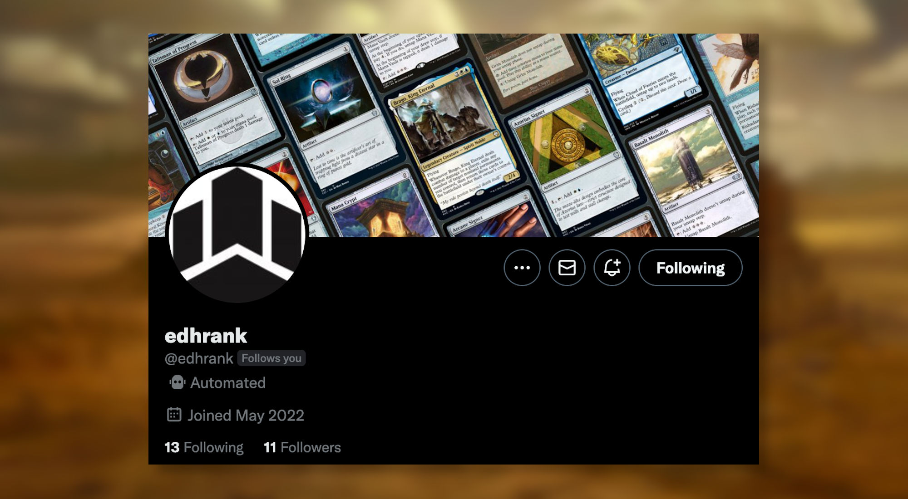
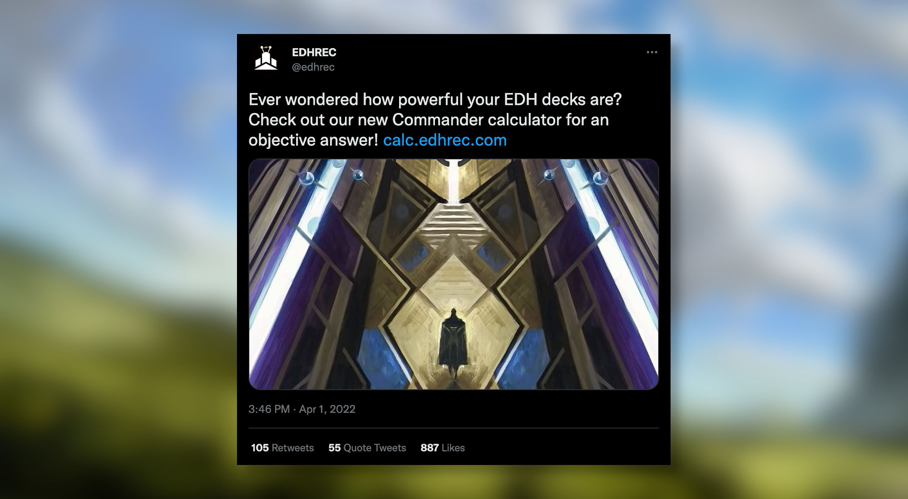
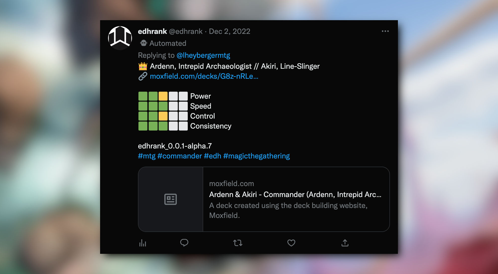

MTG Tools - EDHRank
A fun and automated way to evaluate your deck's power level
Commander decks power levels are an infinite source of discussions both online and offline within your playgroup.
The Commander Power Level Chart
This is probably the most widely accepted way to rank an EDH deck. The scale goes from 1 to 10 (1 being just a pile of cards while 10 is reserved for the most competitive decks).
Lot of resources are explaining this power scale and try to help you rank your deck against this power scale:
- MTG Rocks | How to Assess an MTG Commander Power Level
- The Command Zone #295 | How to Determine Your Deck’s Power Level
- The Nitpicking Nerds Power Level Scale (1-10) | How Strong is your Commander Deck?
- Wizard Tower | EDH Deck Building: Understanding Power Level
Other Ranking Methods
The Commander Power Level Chart has been a controversial topic, with some proposing alternative ranking methods.
-
WizardTower | Power Level in Commander This article suggests considering the overall structure of your deck and examining factors such as board impact, strictly better alternatives, optimal mana cost, versatility, efficiency, and combo potential. It also suggests ranking your individual decks according to categories such as casual, middle ground, and CEDH.
-
Candlekeep | Power Level in Magic the Gathering : Commander This article guides you through evaluating your cards and overall deck performance along factors such as combos and tutors, manabase optimisation, mana curve. Is also suggest to understand the average turn at which the deck becomes threatening.
-
James McCormick | An End to Power Level Discussions in EDH The author argues that the concept of power level is subjective and can lead to negative experiences, such as feeling pressure to build powerful decks or feeling excluded from playgroups due to having a lower power level. The author suggests that players should focus on having fun and building decks that are personally meaningful or interesting rather than trying to optimize for power level. The article also discusses ways that players can approach deckbuilding and play in a more inclusive and positive manner, such as communicating clearly with their playgroup and avoiding disruptive strategies.
-
Card Kingdom Blog | ROAR: A NEW COMMANDER RATING SCALE This article suggests to evaluate the power of your commander deck according to the number of "Resolutions Or Attacks Required" (or ROAR) in order to win the game. A ROAR score between 0-2 would indicate a cEDH deck while a ROAR between 7 and 10 would describe a very casual deck.
You can find additional discussions around power level in the following videos:
- Tolarian Community College | How To Evaluate Your Commander Deck's Power Level
- The Commander's Quarters | The Power Level Problem in Commander
EDHRank Twitter bot
In April 2022, @edhrec tweeted an April Fool's joke by announcing a fake Commander calculator.

The "tool" returned a Power Level of 7 for any input, regardless of whether it was a real deck list or not. Ranking your deck as a 7 is a running joke in the Commander community.
However, the idea of a Power Level calculator was intriguing, so I decided to build a usable one myself.
Introducing...

Instead of ranking decks on a single-dimensional scale like the Commander Power Level Chart, I rank decks according to four different factors:
-
Power: This factor is a combination of the Commander's power tier and the power of individual cards in the deck.
-
Speed: This factor takes into account the average mana value of the deck, the number of mana producers (including mana rocks and mana dorks), and the number of sources of card advantage.
-
Control: This factor is based on the number of board wipes and targeted answers in the deck.
-
Consistency: This factor considers the combo density and their power, as well as the number of tutors and sources of card advantage.
Each dimension is ranked between 0 and 5 which gives for the example above:
- Power: 2.5
- Speed: 3
- Control: 2.5
- Consistency: 3
To validate that my bot is returning (kind of) accurate results I ranked all the official pre-constructed decks as well as all the available decks from the Competitive EDH Decklist Database.
Usage
ℹ️ @edhrank is publicly available and free to use.
If you want to try it on your own decklists, simply mention @edhrank in a tweet containing a supported decklist link.
💡 Example :
@edhrank https://www.moxfield.com/decks/{deck_id}
The following deck building websites are supported:
- aetherhub.com
- archidekt.com
- deckstats.net
- moxfield.com
- mtggoldfish.com
- scryfall.com
- tappedout.net
- tcgplayer.com
Closing Words
I hope you will have as much fun as me ranking your decklists and see how they compare to each other. Feel free to give me some feedback on Twitter, that would be very appreciated. No Power Level method is obviously perfect, and I know mine has some issues that I plan to mitigate and fix in the future.
If you like it or want to be kept up to date, consider supporting me by: